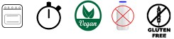

Er du glad for kage og er hoppet på cupcakes trenden, så er du kommet
det rigtige sted. Her kan du finde klassiske, nye eller bare anderledes
opskrifter som tager højde for priser og gøre bagningen nem og hyggelig 💗
Indunder hver af de nemme opskrifter kan du finder “Tips & Tricks”,
“Alternative” ingredienser og pynte anbefalinger som helt sikkert vil vække
din bageglæde 🤩
Er du veganer, laktoseintolerant eller glutenallergiker så finder du alternative
ingredienser inde på fanen “Alternativer”
